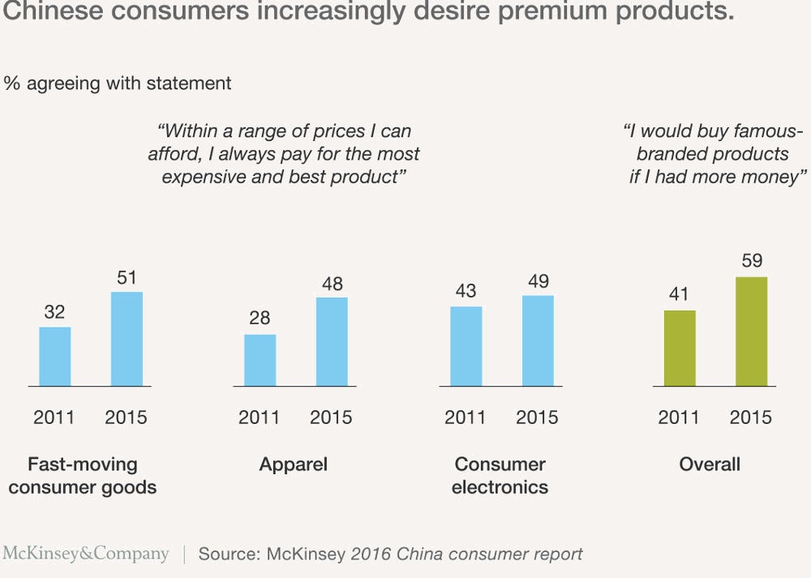

RETAI UŽDUODAMI
KLAUSIMAI

Surašėme klausimus, kuriuos žmonės turėtų užduoti, bet dažniausiai to nepadaro. Nuo bendriausių iki smulkmeniškų. Praneškite mums, jei turite klausimą, kuris turėtų atsidurti šiame sąraše.
21 amžiaus Kinija – kylanti supervalstybė, bandanti pasivyti savo pačios galimybes. Tai galinga biurokratija, mėginanti suvaldyti chaosą. Jau būdama viena svarbiausių pasaulio galių ji tebeturi didžiulių galimybių augti. Nuo 2010 metų, kai pagal BVP rodiklį aplenkė Japoniją, Kinija yra antra didžiausia pasaulio ekonomika. Tarptautinio Valiutos Fondo duomenimis, atsižvelgus į perkamosios galios paritetą, Kinijos ekonomiką galima oficialiai vadinti didžiausia pasaulyje. Tai reiškia, kad individualūs šalies vartotojai turi didžiausią perkamąją galią. Ir čia yra DAUGYBĖ vartotojų: kas penktas pasaulio žmogus yra kinas. Tikriausiai pastaruoju metu vis girdite, kad dabar Kinijos BVP auga lėčiausiai per pastaruosius dešimtmečius (6,7 proc. 2016 metais). Tačiau toks tempas yra mažas tik palyginti su vidutiniu 10 proc. augimu, skaičiuojamu nuo 1978-aisias įvykdytų ekonominių reformų. Šiandieninis Kinijos augimas yra puikus palyginti su JAV, kuriuos prieaugis 2016-aisiais buvo dvigubai mažesnis. Ekonomikos sulėtėjimas – natūralus procesas po kelių dešimtmečių spartaus augimo. Tai atsitiko Kinijai tampant nebe pigių prekių gamintoja (dabar pigios prekės gaminamos Vietname arba Meksikoje), o didžiausia vartotoja su itin sparčiai augančia viduriniąja klase. 2015 metų „Credit Suisse“ ataskaitos duomenys rodo, kad kinų vidurinioji suaugusiųjų klasė didesnė nei amerikiečių. Skaitykite daugiau: Global Wealth in 2015: Underlying Trends Remain Positive Kinija, turėdama didžiulį kiekį potencialių naujų vartotojų, šiuo metu yra viena svarbiausių pasaulio šalių tiek politine, tiek ekonomine prasme.
Ko kinai iš tiesų nori?
Didžiausiai pasaulyje ir vis dar augančiai viduriniajai klasei būdingos ir viduriniosios klasės vertybės. Vakarų kompanijos anksčiau taikydavosi tik į turtingiausius Kinijos vartotojus (milijonierių Kinijoje tikrai daug), tačiau šalies vartotojai tapo žymiai įvairesni ir gyvena ne tik pakrantės miestuose. Taigi, ko kinai iš tiesų nori? Pirmiausia, Kinija nėra vientisa ir vienoda, todėl neegzistuoja ir tipinis vartotojas kinas. Tai milžiniška šalis, susidedanti iš skirtingų regionų, kurių gyventojai turi skirtingus poreikius. 35 administraciniai regionai, 56 oficialiai pripažįstamos etninės grupės, 200 visiškai skirtingų dialektų – sunku įsivaizduoti sudėtingesnę šalį. Vartotojų skirtumai Kinijoje yra lyg skirtingų šalių gyventojų. Pirmosios išsivystymo pakopos miestų (Pekinas, Šanchajus) ir trečios pakopos (Dzijangas, Lešanas) miestų vartotojai skiriasi iš esmės. Jūs privalote žinoti, kas bus Jūsų klientas. Tačiau esama tendencijų, kuriomis galima kliautis. Remiantis „McKinsey“ 2016 metų Kinijos vartotojų ataskaita, dėl kurios buvo apklausta 10 tūkst. vartotojų 44 Kinijos miestuose, viena stipriausių ir augančių tendencijų – perėjimas nuo masinės gamybos produktų prie premium. Skaitykite daugiau: Here comes the modern Chinese consumer  Masinės produkcijos rinkoje visada karaliaus kinų įmonės, tačiau premium segmente jos nėra tokios patikimos kaip užsieniečių, ypač kosmetikos ir sveikatos priežiūros sektoriuose. 38 proc. apklausos dalyvių nurodė „organinį ir sveiką maistą“ tarp savo trijų prioritetų. Tačiau Kinija neturi patikimų organinio maisto sertifikavimo sistemų, taigi užsienio sertifikatai įgyja labai svarbią reikšmę. Kinijoje atsiranda vis jaunesnių vartotojų, o šie – labiau vakarietiški. Jie atsižvelgia į atsiliepimus internete ir yra labiau linkę išbandyti naujus dalykus, pavyzdžiui, skalbinių minkštiklį, kurio nenaudojo jų tėvai ir seneliai. Skaitykite daugiau: Mapping China's middle class Ankstesnės strategijos – produktą standartizuoti ir daryti patrauklų plačiai visuomenei – dabar nebeveikia. Kinai vis aiškiau pareiškia, ko jie nori arba nenori, tad strategijos turi būti siauresnės ir konkretesnės. Geroji žinia ta, kad, palyginti su ankstesnėmis kartomis, jaunieji vartotojai išleidžia didesnę savo pajamų dalį, taigi, jei jie iš tiesų kažko nori, greičiausiai netaupys ateičiai.
Ar žmonės čia kalba angliškai?
Kitaip nei Europoje, kur beveik visi aukštesnio išsilavinimo žmonės sklandžiai kalba angliškai, čia dauguma verslininkų anglų kalbos nemoka – net ir svarbių įmonių vadovai, nekalbant apie didžiąją dalį tiekėjų ir gamintojų. Tuomet pasirodome mes. Jei galite pasiūlyti puikų produktą ar paslaugą, mes padėsime Jums suprasti, kaip jį atnešti į Kiniją. Mes galime palydėti Jus visos odisėjos metu – nuo strategavimo, verslo ryšių mezgimo iki sandorio sudarymo, priežiūros ir dar toliau.
Ne, Jūsų draugas negali būti vertėju, nebent jis diplomatas, verslininkas ir derybų meistras. Vertimas yra žymiai daugiau nei žodžiai – tai tonas, kultūrinio konteksto išmanymas ir per patirtį įgytos žinios. Jei leisite bet kam versti Jūsų įmonės dokumentus, būkite pasiruošę nesusipratimams, informacijos dingimui arba atsiradimui(!) – visai tai pakenks Jūsų reikalui.
Galite, jei Jūsų pasiūlymas jiems pasirodys tikrai pelningas (taigi nelabai pelningas Jums). Kitais atvejais kinams labiau patinka dirbti su žmonėmis, kurie supranta Kiniją ir jos gyventojus. Patikimai naviguoti rinkoje galėsite tik turėdami pašonėje Kiniją gerai išmanantį žmogų. Net paprasti dalykai kaip pinigų perlaidos ir atsiskaitymo su tiekėjais įpročiai Kinijoje yra kitokie. Jei patys neapsigyvensite Kinijoje, Jums reikės pagalbos susisiekti su tiekėjais ir platintojais. Be to, reikės naujos marketingo socialiniuose tinkluose strategijos, nes Kinijoje naudojamos tik čia populiarios programėlės (apie „Wechat“ skaitykite čia). Tradicinės interneto svetainės Kinijoje nesvarbios palyginti su programėlėmis mobiliesiems įrenginiams. Importo-eksporto teisės aktai bei darbo teisė yra ne tik sudėtingi, bet ir nuolat keičiasi, o užsienio įmonės apie tai dažniausiai sužino paskutinės. Kinijos valdžia įpareigoja darbdavius kaupti informaciją apie darbuotojus, mokėti jų socialinio draudimo įmokas ir mokesčius. Net jeigu nuspręsite imtis prekybos patys, norėdami legaliai įdarbinti žmones turėsite kreiptis į darbo biržą. Teisės aktai Kinijoje nėra vykdomi tiksliai kaip parašyta – kartais oficialiose svetainėse perskaitysite viena, tačiau iš žmonių girdėsite kita. Kaip manote, kuri tvarka yra tikroji? Jei Jūsų produktui nesuteikiamas importo leidimas net įvykdžius formalius reikalavimus, prireiks ryšių Kinijoje ir ilgo kasimosi vien tam, kad suprastumėte priežastį.
Konsultantai yra vietos ekspertai, panašūs į šiuolaikinius gidus ar guru: iš dalies teisininkai, iš dalies vertėjai, iš dalies Jūsų instruktoriai. Mes ne tik problemų sprendėjai – mes esame problemų prevencija. Siūlome kultūriniu supratimu paremtą rinkos analizę, verslo ryšių mezgimą ir strategijų kūrimą. Padedame išsklaidyti neaiškumus prieš Jums imantis kito žingsnio. Konsultantai pateikia apskaičiuotus, patirtimi, ryšiais ir tyrimais paremtus sprendimus. LITAO siūlo dar daugiau: mes padedame įgyvendinti tai, ką patariame. Konsultantas yra praktinis vadovas, kuris padės suprasti ir išspręsti viską, kas šioje šalyje atrodo nelogiška kultūriškai, lingvistiškai, logistiškai ir teisiškai. Nuo verslo agentų ar atstovų mes skiriamės tuo, kad ne tik vykdome, bet padedame sukurti ilgalaikę augimo strategiją. Patarėjai egzistavo visose kultūrose: nuo šamanų ir žiniuonių iki vizirių ir vyriausiųjų patarėjų. Vieni atneša žinias iš kito pasaulio, kiti remiasi dešimtmečius kauptomis praktinėmis pamokomis. Visi jie atlieka vieną darbą – susieja patirtį su sprendimu, kad gentis, valstybė ar įmonė taptų geresne savo pačios versija.
Turite mąstyti kaip vietiniai: žinoti, kurioje Kinijos dalyje – tikrai ne visoje šalyje – norite plėstis. Tada mūsų padedami sukurti savo esminę žinute vartotojams. Turite ne tik susirasti patikimą vietos įmonę, kuri patars ir konsultuos, bet ir kuo greičiau užregistruoti savo prekės ženklą visose jums aktualiose srityse, nes Kinijoje intelektinės nuosavybės teisės priklauso tam, kuris pirmasis jas įregistruoja. Būtent todėl milijardierius Donaldas Trumpas įregistravo „Trump“ prekės ženklą statybų sektoriuje dar 2006 metais, nors jo viešbučių tinklas Kinijoje neplėtojamas iki šiol. Skaitykite daugiau: The Trump brand wins a battle in China Įvairiais skaičiavimais, jam priklauso maždaug pusė iš visų Kinijoje registruotų „Trump“ prekės ženklų. Kinijos teismas neseniai uždraudė kitoms įmonėms naudotis šiuo ženklu statybų sektoriuje. Kinų įmonės kituose sektoriuose, pavyzdžiui, prabangių unitazų įmonė „Trump Toilets“, taip pat gali turėti teisinių nemalonumų. Tačiau visa tai būtų neįmanoma, jei milijardieriaus samdyti aukščiausio lygio teisininkai nebūtų ėmęsi išankstinių atsargumo priemonių. Skaitykite daugiau: Trump victory china real estate trademark
„Kalba ne tik išreiškiame savo mintis, bet ir jas sukuriame“, – Chin-Ming Chu. Dažnai girdime mūsų klientus kalbant: „Nesuprantu, koks vis dėlto yra šio žmogaus atsakymas. Jis atsakė „taip“ į klausimą, kuris reikalavo paaiškinimo ir apibūdinimo“. Daug priklauso nuo to, ar teisingai klausiama. Egzistuoja ne tik kalbos barjeras, kartais kinai nesupranta specifinių standartų. Pavyzdžiui, „pakankamai gerai“ išties gali būti tik „patenkinamai“, ypač, jei jie nori patikinti, kad viskas tvarkoj, kai taip nėra, ir tikisi apkvailinti naujoką. Verslo derybose privaloma klausti aiškių, konkrečių klausimų, į kuriuos nebūtų galima atsakyti aptakiai. (Kartais nenorėdami sakyti „ne“ kinai gali sakyti „pažiūrėsime“ arba paprasčiausiai neatsakyti.) Prieš klausdami turite žinoti raktinius žodžius ir čia galime padėti mes. Kinams ne visada būdingas linijinis mąstymas, taigi nesitikėkite, kad kiekvieną kartą pasiūlymai judės nuo A iki B, po to iki C, o distributoriai laikysis verslo plane numatytų datų. Verslas Kinijoje dažnai reiškia vaikščiojimą ratais: keli susitikimai gali būti skirti tik arčiau susipažinti. Kol distributorius jumis nepasitiki (tai reiškia, kad, jei netampate draugais, bent pradedate draugiškai elgtis), tol verslas veikiausiai neįmanomas. Todėl guanxi (skaitykite žemiau) ir yra toks svarbus Kinijoje. Kinų verslininkai, kurie su mumis dirbo praeityje, žino, kad gali pasitikėti mumis, todėl pasitikės ir Jumis.
Čia visi žino: verslui Kinijoje reikia dviejų dalykų – guanxi ir pinigų. Tik pinigų nepakanka. Guanxi reiškia asmeninius ryšius: tinklą pažįstamų, kurie linkę vieni kitiems padaryti paslaugą versle arba asmeniniame gyvenime. Kinijoje, kur beveik viskas gali būti suklastota, labai daug priklauso nuo asmeninio pasitikėjimo. Guanxi toks svarbus, kad kai kurios kinų kompanijos samdo žmonės, kurių vienintelis darbas – pažinoti ir palaikyti ryšius su tais, kuriuos būtina pažinoti. Mes metų metus puoselėjome pasitikėjimą, kurį įgavome per asmeninius susitikimus arba dėl puikių darbo rezultatų. Sužinokite apie mūsų guanxi. .
Įmonės patikrinimas parodo, ar ji išties yra tokia, kokia sako esanti. Nuo patvirtinimo, kad įmonė iš tiesų egzistuoja, iki atsiliepimų apie ją, išsiaiškinimo, ar ji turi nuolatinių darbuotojų, ir jos finansinės padėties. Mums teko atskleisti veiklą imituojančių įmonių su banko sąskaitomis užsienyje, tik interneto svetainėse egzistuojančiomis gamyklomis, vienai dienai pasiskolintais biurais. Jei iš anksto nepatikrinsite įmonės, vėliau joks teismas pinigų Jums negrąžins. Kad gautumėte geriausia, galvokite apie blogiausia. LITAO vienai įmonei sutaupė 30 tūkst. eurų, kai pastebėjo, kad kinų pateiktoje sąskaitoje įrašytas kitos firmos pavadinimas nei jie skelbėsi anksčiau. Tiekėjai, gavę sertifikatus iš Tarptautinės standartizavimo organizacijos (ISO), gali gerai atrodyti popieriuje, tačiau reali patirtis ir jų klientų atsiliepimai yra žymiai patikimesni. Jums reikia patyrusių žmonių, kurie patikrins dokumentų, įskaitant verslo licenciją, tikrumą, ir žinoti apie paplitusias sukčiavimo schemas. Kitokio tipo patikra vykdoma, kai jau surandate tiekėją, su kuriuo norite dirbti. Tai gamykloje atliekami kokybės patikrinimai – reguliarūs apsilankymai, kad būtų garantuojama nekintanti kokybė. Net jei pavyzdžiai ar pirmosios siuntos atrodo tinkami, gamykla gali staiga nuspręsti sumažinti gamybos išlaidas, todėl svarbu kiekvieną partiją patikrinti prieš ją išgabenant.
Visi kalba apie šią programėlę, bet nesu tikras, ar man jos reikia.
Ši socialinė platforma priklauso Kinijos technologijų gigantui „Tencent“. Tai Kinijos pakaitalas „Facebook“, „Skype“, „WhatsApp“, „Apple Pay“ ir net tradicinėms interneto svetainėms. Šia programėle galima atlikti viską: kalbėti, pervesti pinigus, sumokėti mokesčius, apsipirkti, žaisti, užsisakyti maisto, išsikviesti taksi, stebėti mėgstamų įmonių ar žmonių paskyras, kuriose pateikiamos visos naujienos. Vien per 2016 metus „WeChat“ populiarumas augo 35 proc. – iki 850 mln. kiekvieną mėnesį aktyvių vartotojų ir 1,1 mln. registruotų vartotojų. Beveik visi – iš Kinijos.
Vartotojų ne tik daug, jie labai ištikimi: 750 mln. žmonių ja naudojasi kasdienių, pusė iš jų – mažiausiai 90 minučių. 85 proc. vartotojų amžius yra nuo 22 iki 55 metų – tai kertiniai vartotojai. Net tvarkant asmeniškiausius ar verslo reikalus kliaujamasi ne elektroniniais laiškais ir ne skambučiais, o „WeChat“.
Taigi didžioji dalis Kinijos, ypač jauni ir vidutinės klasės vartotojai, naršo, apsiperka ir bendrauja naudodamiesi mobiliosiomis programėlėmis, kurios tampa vis svarbesnės už tradicinius tinklalapius. Rytų Azijoje socialinių tinklų paskyros yra itin populiarios:
 „WeChat“ teikia galimybę įmonėms sukurti oficialias verslo paskyras, kuriose vartotojai gali sekti jų naujienas, pasiūlymus ir bendrauti tarpusavyje. Daugelis kompanijų testuoja programėles pirmiausia sukurdamos oficialias „WeChat“ paskyras, kad pamatytų, ar sulauks populiarumo.
Čia rasite trumpą „WeChat“ sukurtą apžvalgą.
„WeChat“ teikia galimybę įmonėms sukurti oficialias verslo paskyras, kuriose vartotojai gali sekti jų naujienas, pasiūlymus ir bendrauti tarpusavyje. Daugelis kompanijų testuoja programėles pirmiausia sukurdamos oficialias „WeChat“ paskyras, kad pamatytų, ar sulauks populiarumo.
Čia rasite trumpą „WeChat“ sukurtą apžvalgą.
Kinijoje nespalvotos nuotraukos naudojamos tik po žmogaus mirties, todėl tikriausiai nenorėtumėte savęs taip pateikti. Tai tik vienas kitokio kultūrinio konteksto pavyzdys, apie kurį neperskaitysite jokiame gide apie Kiniją – tokios detalės sužinomos tik kasdieninėje praktikoje, viena po kitos.
NAUDINGI
ŠALTINIAI
Dirbame ne tam, kad savo klientams pagautume žuvį, o kad išmokytume žvejoti.
Čia rasite vertingų šaltinių apie verslo Kinijoje ypatumus. Jie neprilygsta tikslingo tyrimo metu iš pirminių šaltinių surinktai informacijai, bet yra gera pradžia bandant suprasti Kiniją.
GLOBAL SOURCES:
Puiki klausimų-atsakymų svetainė apie viską, kas susiję su gamyba ir išteklių paieška Kinijoje (straipsnių temų pavyzdžiai: septyni dalykai, kuriuos tikriausiai pamiršote įtraukti į sutartį su gamykla; kiek galiu sutaupyti perkeldamas gamybą iš Europos į Kiniją; kaip mažai įmonei pasirinkti iš begalės tiekėjų, gaminančių panašius produktus).
Tinklaraštis, kuriamas į Kinijos teisinę sistemą pasinėrusių advokatų, siūlo daugybę esminių įžvalgų apie biurokratines procedūras, intelektinės nuosavybės niuansus ir kitus su Kinija susijusius verslo sprendimus.
Šis Europos Sąjungos remiamas projektas teikia nemokamas konsultacijas Kinijoje veikiančioms mažoms ir vidutinio dydžio įmonėms.
Amerikos prekybos rūmai Šanchajuje, veikiantys kaip vietos verslo ryšių tinklas, taip pat rengia rinkos, ekonomikos, Kinijos politikos ir kitas su verslu susijusias apžvalgas. Atkreipkite dėmesį ir Europos Sąjungos prekybos rūmų Kinijoje svetainę:
Tinklaraštis užsieniečiams apie derybas Kinijoje. Jame rasite informacijos apie sandoriams kylančius pavojus, konfliktų valdymo būdus ir kitų patarimų.
Nesikliaukite tik vakariečių sukurtu Kinijos įvaizdžiu. Caixin yra kiniškas „The Economist“ atitikmuo ir skaitomiausias Kinijoje verslo ir finansų naujienų tinklalapis. Tai nepriklausomas ir mažiau šališkas nei likusi vietos žiniasklaida šaltinis, o pateikiama informacija – išsamesnė nei tarptautinių leidinių.
Aukščiausios vykdomosios valdžios institucijos svetainė anglų kalba apie užsienio verslą Kinijoje.
PDF formatu pateikiama ataskaita „Kinijos vartotojo modernizacija“. „McKinsey“ apklausė 10 tūkst. žmonių 44-iuose Kinijos miestuose ir nustatė dabartines vartojimo tendencijas.
Kinijos Liaudies Respublikos Nacionalinio statistikos biuro duomenys anglų kalba. Čia pateikiama nacionalinio ir regioninio lygio informacija apie produktus ir jų kainas, pramonės produkciją, gyventojų surašymo duomenys ir rinkos bei ūkio sektorių apklausų rezultatai.